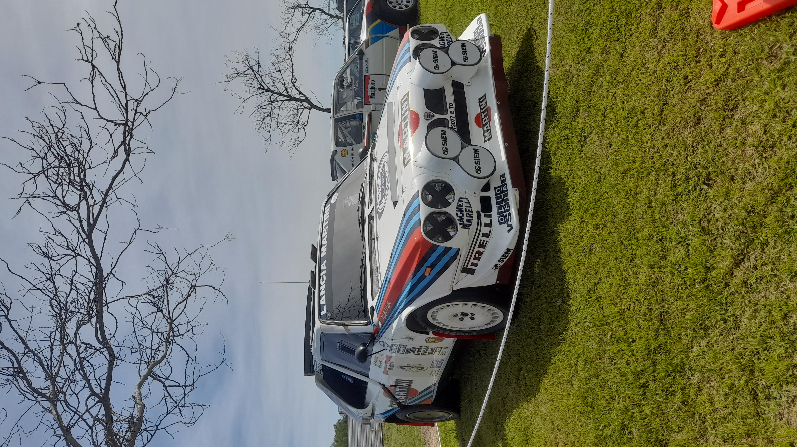
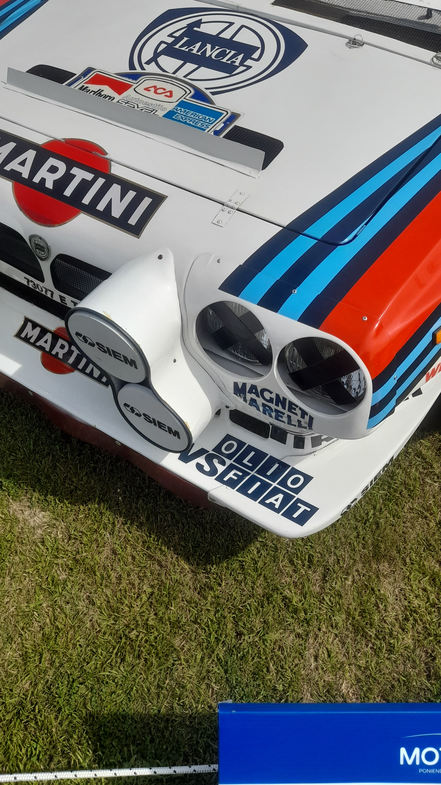
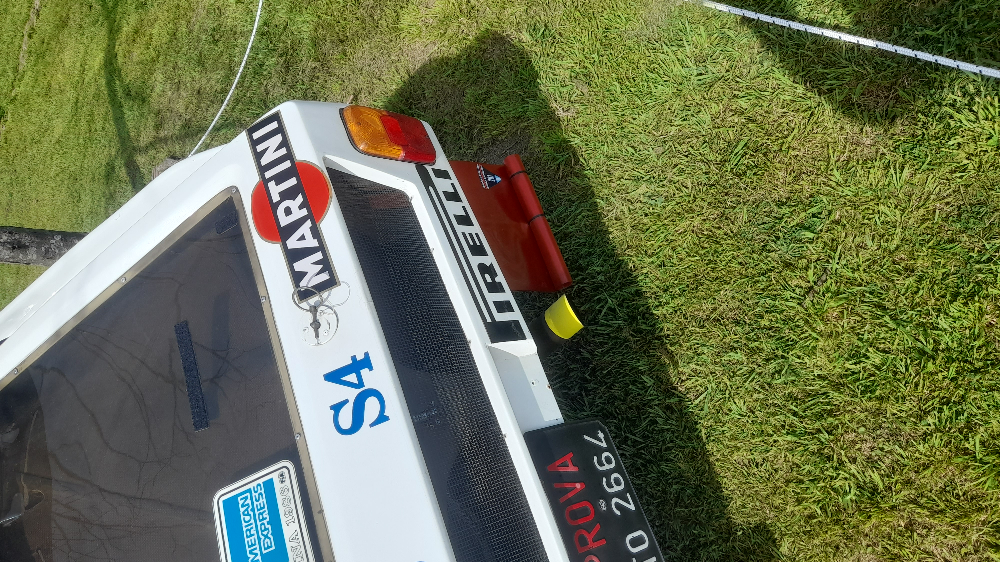
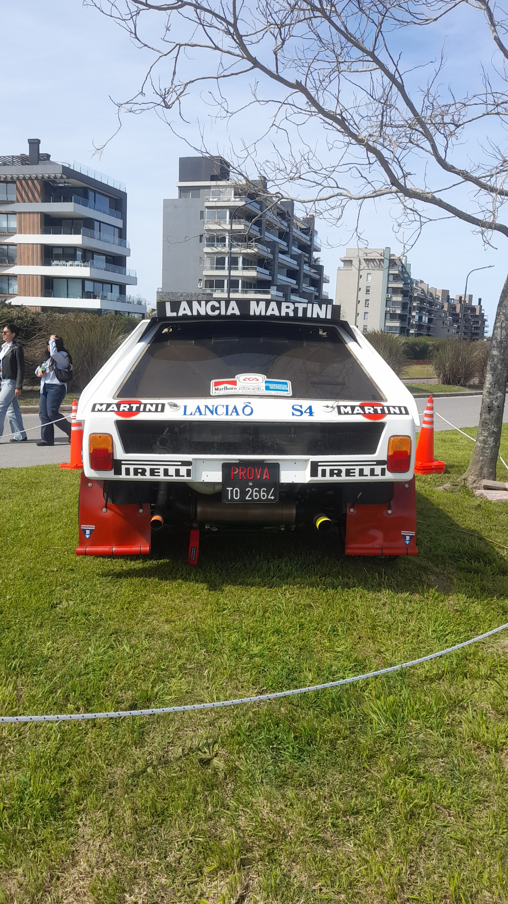
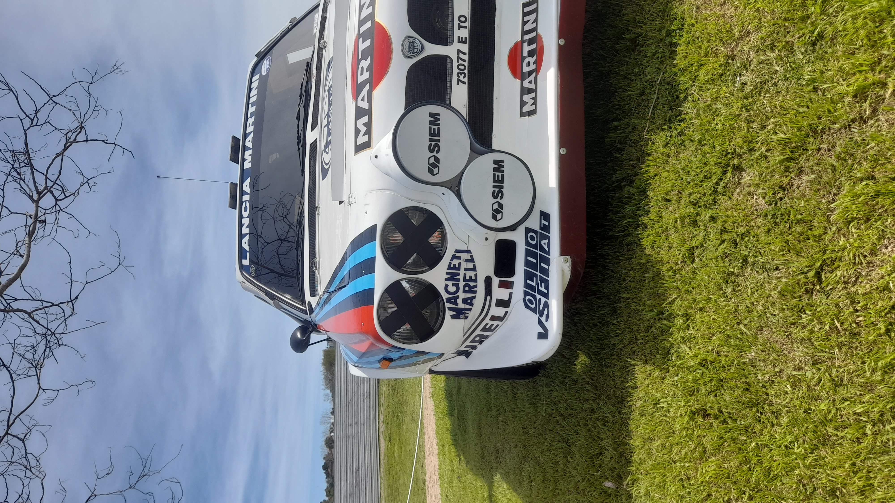
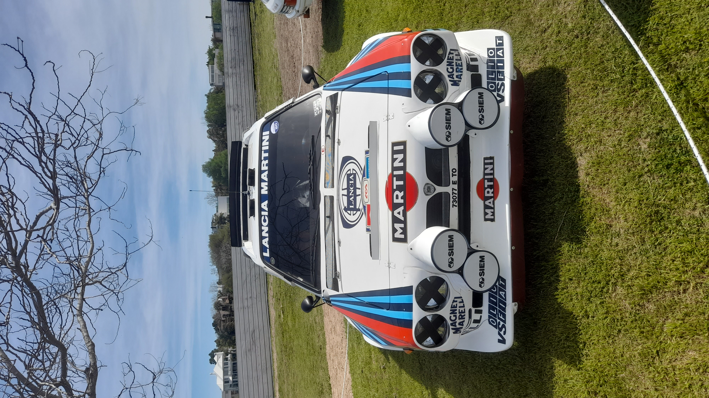
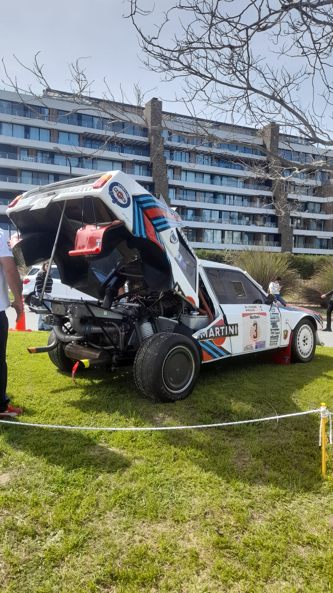
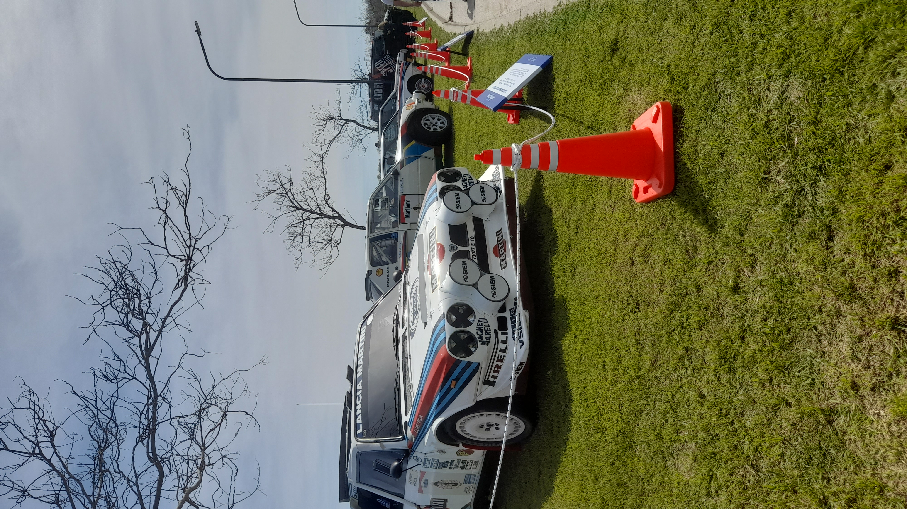

.png)








Lancia Delta S4
1985
1.8 L · 4 CIL.
480–500 HP
AWD
Historia
El Lancia Delta S4 nació como respuesta de Lancia a una nueva era del rally. A comienzos de los años 80, el Grupo B permitió a los fabricantes desarrollar autos prácticamente sin límites, y Lancia necesitaba un reemplazo para el 037, que empezaba a quedar en desventaja frente a los nuevos autos de tracción integral.
Lancia, junto con Abarth, desarrolló un auto que tenía muy poco que ver mecánicamente con el Delta de calle. El S4 utilizaba un chasis tubular, motor central longitudinal de cuatro cilindros y tracción integral. Pero probablemente su característica más llamativa era su sistema de inducción forzada: utilizaba un compresor volumétrico y un turbocompresor trabajando juntos.
Para poder competir en el Grupo B, Lancia tuvo que construir las unidades necesarias para su homologación de calle. Así nació el Delta S4 Stradale, una versión de carretera basada en el auto de competición, aunque bastante más civilizada.
El Delta S4 fue homologado por la FIA en noviembre de 1985 y debutó en el Campeonato Mundial de Rally en el Rally de Gran Bretaña de ese mismo año. Lancia tuvo un debut prácticamente perfecto: Henri Toivonen ganó el rally y Markku Alén terminó segundo, consiguiendo un doblete para la marca.
En 1986 el S4 se convirtió en uno de los principales protagonistas del campeonato. Toivonen consiguió una victoria en el Rally de Montecarlo y Lancia volvió a demostrar que tenía uno de los autos más rápidos de toda la categoría.
En el Rally de Córcega de 1986, Henri Toivonen y su copiloto Sergio Cresto fallecieron en un accidente mientras competían con un Delta S4. Después de una temporada marcada por varios accidentes graves, la FIA decidió cancelar el Grupo B para 1987.
Especificaciones
- Motor: cuatro cilindros en línea 1.8
- Potencia: 480-500 HP
- 0-100 km/h: 2,3 s
- Tracción: Integral
- Sobrealimentación: compresor volumétrico + turbocompresor
Valoración: 5/5
Mi encuentro con el auto
Lugar: Motor Zone
Fecha: 13/09/2025
Opinión personal
Un auto único en su especie, que me fascina hace años. El hecho de que usara un sistema de doble sobrealimentación (twin-charging) que combinaba un supercargador Volumex y un turbo KKK, me volaba la cabeza.